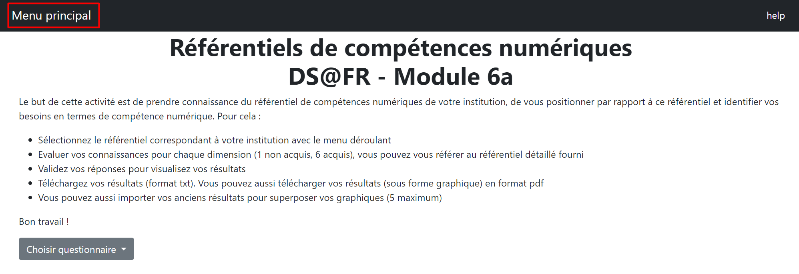
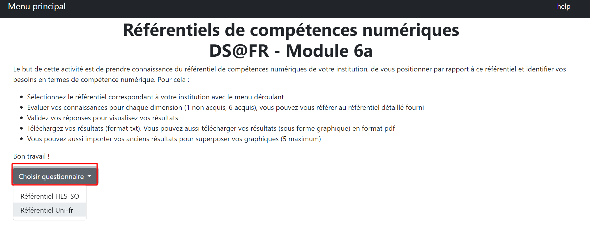
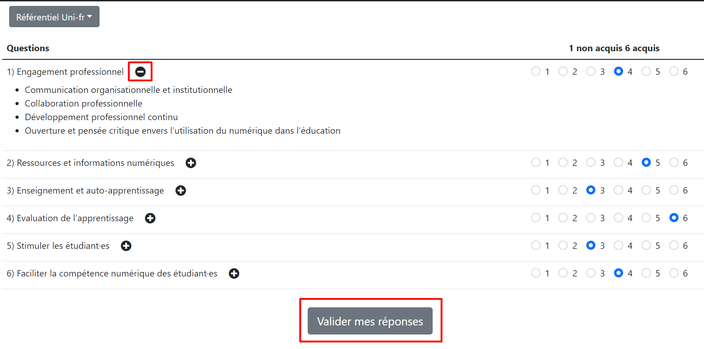
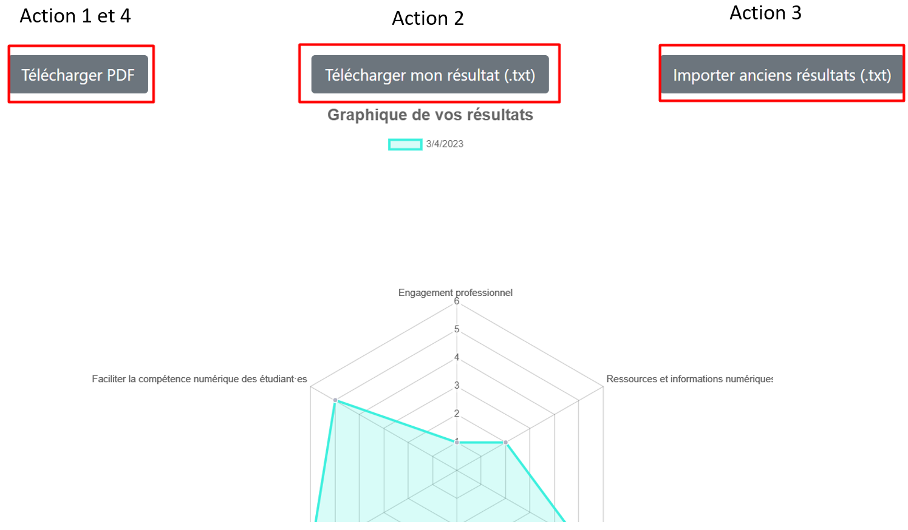
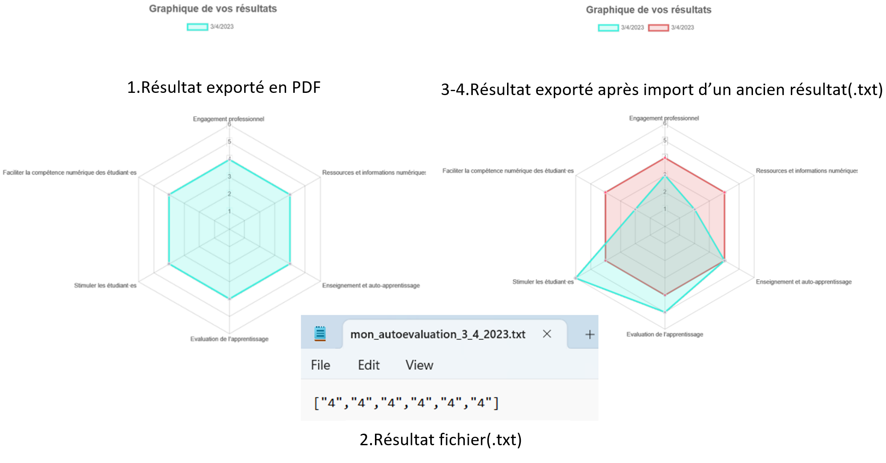

Référentiels de compétences numériques
DS@FR - Module 6a
Le but de cette activité est de prendre connaissance du référentiel de compétences numériques de votre institution, de vous positionner par rapport à ce référentiel et identifier vos besoins en termes de compétence numérique. Pour cela :
- Sélectionnez le référentiel correspondant à votre institution avec le menu déroulant
- Evaluer vos connaissances pour chaque dimension (1 non acquis, 6 acquis), vous pouvez vous référer au référentiel détaillé fourni
- Validez vos réponses pour visualisez vos résultats
- Téléchargez vos résultats (format txt). Vous pouvez aussi télécharger vos résultats (sous forme graphique) en format pdf
- Vous pouvez aussi importer vos anciens résultats pour superposer vos graphiques (5 maximum)
Bon travail !
Tutorial d'utilisation
Bienvenu sur un tutoriel expliquant le fonctionnement du site. Cette marche à suivre démontre
les actions principales de la plateforme.
Page d'accueil
Voici les différentes actions disponibles depuis la page d'accueil.
Retoure à l'accueil
En cliquant sur "Menu principal" cela permet de revenir à la page d'accueil.

Choisir son questionnaire
En cliquant sur le bouton "Choisir questionnaire", cela ouvrira un menu déroulant contenant les différant établissement qui propose le questionnaire.

Remplissage du questionnaire
Cette page permet de remplir le questionnaire propre à l'établissement sélectionné, le symbole permet d'afficher plus d'information sur la question.
Une fois toutes les questions évaluées, vous pouvez valider les réponses en cliquant sur le bouton "Valider mes réponses", ceci générera un graphique représentant vos résultats.

Consultation des résultats
Cette page affiche un graphique représentant vos réponses au questionnaire. Il y a plusieurs actions disponibles pour export votre résultat.
- Télécharger PDF permet d'exporter votre résultat en PDF, ce fichier PDF contient le graphique.
- Télécharger mon résultat (.txt) permet d'export votre résultat au format fichier text, ce fichier contient le résultat de chaque question.
- Importer anciens résultats(.txt) permet d'importer un ancien résultat exporter en fichier texte. Une fois importer les anciens résultats vont se "superposer" aux résultats actuels

Résultats des exportations
Voici le résultat des différentes actions décrites ci-dessus.
